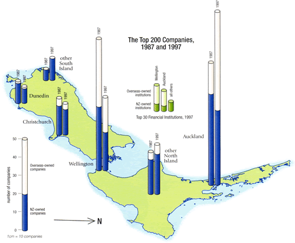

Adding other information to maps
Simple displays such as pie or bar charts can be superimposed on the regions of a map, but they must be simple to be effective.
The bar charts below show clearly that a larger proportion of companies in New Zealand were foreign-owned in Auckland and Wellington than those in the rest of the country. The increase in companies based in Auckland rather than Wellington and the increasing proportion of foreign-owned companies in Auckland in 1997 are evident.
